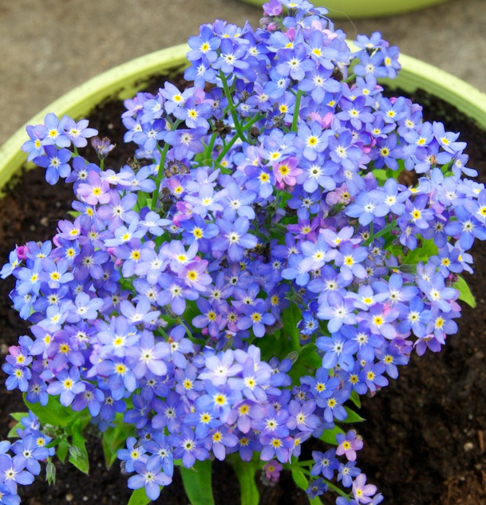

bunga forget me not
Bunga Morning Glory, atau dalam bahasa Indonesia disebut "Bungan Pagi," adalah bunga merambat yang terkenal dengan kelopak berbentuk corong dan warna-warna cerah seperti biru, merah muda, dan ungu.